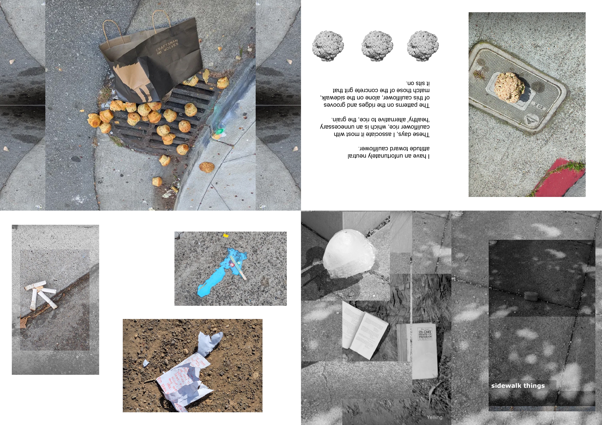

This page is meant to store, display, and share some of the creative work I dabble in during my spare time. I create under the name Yelling and plan to post on Instagram with the handle @yelling000.
Feel free to email me for a higher-quality copy of anything.
Click here to go back to my research-based page.
Music
I don't claim to work within a particular genre, but the sounds I like to play with and create are maybe best classified as ambient, electronic, and/or experimental. I like walking outside, making field recordings, and messing around with them.
You can listen to some of this on my Soundcloud.

sidewalk things (2025)
My first zine. Since living in San Francisco, I've started documenting unexpected items that I encounter on the sidewalk.

some sketches (2025)
Put together a bunch of my sketches into a zine. It's meant to be printed on double-sided A3 paper, where one side folds out into a poster of a splotchy tree from Fort Canning.